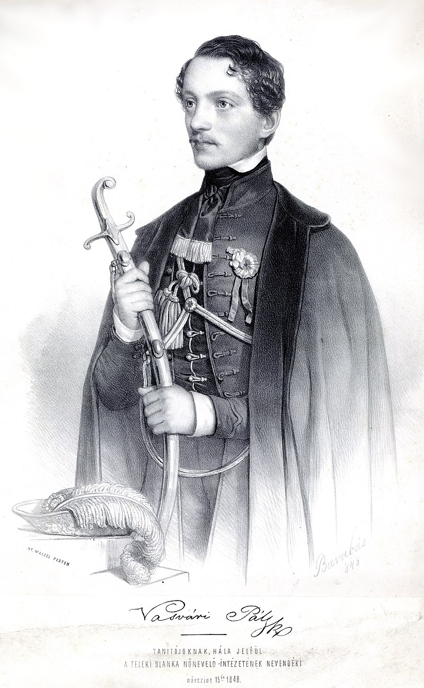

Forrás: a wikipédia Vasvári Pál (történész) c. oldala
(https://hu.wikipedia.org/wiki/Vasv%C3%A1ri_P%C3%A1l_(t%C3%B6rt%C3%A9n%C3%A9sz))
Vasvári Pál (eredeti nevén Fejér Pál; Bûd, 1826. július 14. Havasnagyfalu, 1849. július 6. vagy július 13.) író, történész, pedagógus, filozófus, politikus, forradalmár, a márciusi ifjak egyik vezéralakja, honvéd õrnagy.

Vasvari Pal
Családja, származása
Vasvári Pál õseirõl, a Fejér családról kevés adat maradt fenn. Thallóczy Lajos Vasvári Pál elsõ életrajzírójának megállapítása szerint Bocskay-féle armalis hajdu család. A hajdúkat, akik egyik hadnagya, Fejér Márton volt, még I. Rákóczi György özvegye, Lórántffy Zsuzsanna telepítette be a Nyírségbe a XVII. század közepe táján.
Vasvári Pál nagyapja, Fejér János felszabadított jobbágy volt, 1746-ban született Nyírgelsén. Bacsinszky András munkácsi görögkatolikus püspök szentelte pappá 1774-ben, ezt követõen 1781-ig Mándokon, 1795-ig Palágyon, majd 1814-ig szülõfalujában, Nyírgelsén volt parókus. Nyugdíjas éveit lányánál, Sáránál (1783/86-1844), valamint annak férjénél, Zékány Bazil (László) (1781-1847) parókusnál töltötte, Penészleken hunyt el 1825/26. körül. Felesége Kõmíves Rozália volt, akitõl több gyermeke született. Az elõbb említett Sára nevû leánygyermekén kívül 3 fiúgyermek nevét tudjuk, akik édesapjuk hivatását folytatták, éspedig György (1776-1837) (Gergely néven) szerzetesként, János (1774-1845) és Pál (Vasvári Pál) édesapja pedig parókusként. János fia (szintén János (1802-1879) Vasvári Pál unokatestvére) 1829 és 1879 között Nyírcsászári parókusa volt. Az õ fia volt az a Fejér Emánuel (1840-1912) munkácsi egyházmegyei olvasókanonok, a munkácsi egyházmegye fõtanfelügyelõje, akit néhány internetes forrás tévesen Vasvári Pál testvéreként említ.
Fejér Pál Vasvári édesapja 1786. január 25-én született Palágyon, 1813. december 12-én szentelte pappá Bradács János munkácsi segédpüspök, majd édesapja mellé Nyírgelsére rendelte kisegítõ lelkésznek. 1814-tõl 1821-ig Dámócon volt parókus. Ezután 1827-ig adminisztrátor volt Bûdön, mivel a falu kegyura, Dogály János nem engedte parókussá kinevezni, mert mást kívánt a posztra. 1827 és 1836. között Hajdúböszörményben volt parókus. Hajdúböszörmény volt az ún. Hajdú Kerület székhelytelepülése, az ottani parókus látta el többek között, Balmazújváros, Hajdúszoboszló, Nádudvar, Püspökladány, sõt Debrecen gorögkatolikus híveit is. 1836-ban Nyírvasváriba került, ahol a nyíri esperesi kerület konfesszáriójaként (gyóntatójaként) is tevékenykedett. Fia innen vette fel a 'Vasvári' nevet. Nyugdíjasként pontosan meg nem állapítható idõpontban Gebére (ma: Nyírkáta) költözött, Sára nevû néhai nõvérének Zékány Márta (1817-1883) nevû leányához és annak férjéhez, Lengyel Teodor (1808-1862) parókushoz, és ott halt meg 1851. április 4-én.
Még felszentelése elõtt, 1813. június 8-án, az akkori Abaúj-Torna megyében lévõ Gadna községben megnõsült, feleségül vette Méhey Erzsébetet, a gadnai parókus, egyúttal csereháti esperes, Méhay János leányát. Méhay Erzsébet Vasvári Pál naplóbejegyzésének tanúsága szerint 1843-ban hunyt el valószínûleg Nyírvasváriban, sajnos errõl bizonyosság nem szerezhetõ, illetõleg a pontos idõpont nem állapítható meg, mivel a nyírvasvári görögkatolikus anyakönyveket a II. világháború végén a román csapatok megsemmisítették. Méhay János késõbb magas egyházi tisztséget töltött be, 1816-ben alakult a Munkács Egyházmegye kassai külhelynökségébõl az Eperjesi Egyházmegye, melynek a nagyprépostja, a második embere lett, egészen 1835. január 28-án bekövetkezett haláláig.
Fejér Pál és Méhay Erzsébet házasságából Dámócon két fiúgyermek született, éspedig 1815. július 24-én Ágoston, 1818. november 7-én pedig János. Ágoston a mai Hajdú-Bihar megye, berettyóújfalui járásában, a román határ közelében lévõ Biharkeresztesen (akkori nevén Mezõkeresztesen, tehát nem tévesztendõ össze a mai Borsod-Abaúj-Zemplén megye mezõkövesdi járásában lévõ hasonnevû várossal) élt családjával. Nejét Keresztesi Karolinának hívták. Nevezettet a gr. Teleki Blanka ellen folyt bûnvádi eljárásban melynek során 10 évi várfogságra ítélték 1851-ben tanúként hallgatták ki. 1851 és 1853 között biztosan, de valószínûleg az azt megelõzõ és követõ években is Biharkeresztes község bírája, azaz elöljárója (mai kifejezéssel polgármestere) volt. Nagy valószínûséggel 1868. elõtt hunyt el. Az imént hivatkozott tanúkihallgatási jegyzõkönyv tanúsága szerint 1851-ben 2 gyermeke volt. Egyikük az a Fejér Elek (1843-1911) ítélõtáblai bírói címmel és jelleggel felruházott budapesti királyi törvényszéki bíró, akit néhány internetes forrás szintén Vasvári Pál testvéreként említ.
Vasvári Pál másik testvérérõl, Fejér Jánosról pedig a nevén és a születési idején kívül más nem tudható. Csupán az bizonyos, hogy a felnõttkort szintén megérte, és Ágostonhoz hasonlóan õ sem követte édesapja lelkészi hivatását.
Élete
Vasvári Pál 1826. július 14-én Tiszabûdön született Fejér Pál néven. Elemi iskolai tanulmányait Hajdúböszörményben végezte, majd 1837-tõl a nagykárolyi piarista gimnáziumba került. Itt mindvégig elsõ eminens, kiváló tanuló, a Károlyi grófok támogatták, házitanítóként is mûködött a Károlyi grófok tisztviselõinek gyermekei mellett, egyes források szerint gr. Károlyi Lajos gyermekeit is tanította. Mint legkiválóbb tanuló végzésként õ búcsúzott tanáraitól évfolyama nevében. 1843-ban a Károlyi grófok támogatásával beiratkozott a pesti egyetemre, ahol bölcsészet szakon történelmet és természettant hallgatott, de idõvel Horvát István hatása miatt teljesen a történelemnek szentelte magát. Már egyetemi hallgatóként vezérszerepet vitt az ifjúság körében. 1847-ben a Teleki Blanka által alapított nevelõintézetbe került tanárnak. Ugyanebben az évben kezdte el használni a Vasvári nevet, s az 1848. január elején megjelent Történeti Névtár címû mûvében a kiadó, Magyar Mihály már Vasvári Pálként szerepelteti nevét.[2]1848 március 15-én a kitörõ forradalom vezetõi között tevékenykedett, fontos szerepe volt a 12 pont megalkotásában, majd a népgyûlés elé terjesztésében is. Petõfi a forradalom nevében lefoglalt nyomdagép mellett emlékezetbõl írta le a Nemzeti dal mámoros sorait. Vasvári ollóval a kezében várta egy-egy újabb versszak megszületését, felszabdalta a papírt, hogy gyorsabban dolgozhassanak a betûszedõk. Tagja lett a Közcsendi Bizottmánynak is, és õ üdvözölte hivatalosan a Batthyány-kormánynak Pozsonyból, az országgyûlésrõl április 14-én Pestre érkezõ tagjait.
Vasvári április 30-ától a belügyminisztériumban volt fogalmazó, június 15-étõl a pénzügyminisztériumban titkár. Noha kormánytisztviselõként tevékenykedett, radikális nézeteibõl nem engedett, s július 16-án belépett a kormány radikális ellenzékét tömörítõ Egyenlõségi Társulatba. Szeptember 22-én Vasvári "magán dolgaira" útlevelet kért és kapott Pest megyétõl Somogy, Tolna és Veszprém megyébe. Valójában azonban nem magánútról volt szó, amit maga az úticél is bizonyít, hiszen Jellaèiæ betörõ csapatai ekkor már Somogy megye területén nyomultak elõre. Vasvári ajánlólevelet kapott Madarász László képviselõtõl, az Egyenlõségi Társulat elnökétõl is. Vasvári eredeti úticélja Somogy megye igali járása, Kiliti, Hídvég, Tab környéke volt. A horvát hadsereg ezen az útvonalon, a Balaton déli partján nyomult elõre, s Vasvári feladata nyilvánvalóan az itteni népfelkelés megszervezése lett volna. Ám amikor Vasvári megkapta a megbízólevelet, a magyar hadsereg már Lepsénytõl vonult vissza Székesfehérvár felé, s rövidesen a város feladásáról is megszületett a döntés.
Vasvári Somogy megyébe immáron nem juthatván el Székesfehérvárra, majd a magyar hadsereggel együtt a sukorói táborba ment. Itt valóban "izgatott" annak érdekében, hogy a tisztikart a megütközésre bírja. Szeptember 27-én Velencérõl küldött tudósítást a Március Tizenötödikének. "seregünk már ide nehezen akart jönni, s általános a hír, miszerint innen tovább hátra nem fog vonulni". A csatát nem akarják a fõvároshoz vinni, mert ezáltal felbátorítanák az ellenséget. Szeptember 28-án délben Vasvári futárként a fõvárosba érkezett Batthyány Lajos miniszterelnök levelével és azzal a hírrel, hogy Jellasics 24 órás fegyverszünetet kötött. Amíg Pázmándy Dénes, a képviselõház elnöke zárt ülésre hívta össze a képviselõket, Vasvári a képviselõház erkélyérõl tájékoztatta az összegyûlt népet a magyar hadsereg harckészségérõl.
Október 2-18. között a Fõvárosi Csapat parancsnoka volt a dunántúli táborban (Petõfi István, a költõ édesapja ebben a csapatban szolgált vén zászlótartóként).
A gyermek egyedül nem képes útnak indulni, vezetõre van szüksége. Kiskorú nemzetnél ez alapja a fõvezéri hatalomnak. A népet vezeti egy tapasztaltabb, okosabb férfiú. A tömeg ragaszkodása egy ily vezérhez igen természetszerû. Nála látják elrejtve jövõjök kulcsait, gyermeki bizalommal simulnak hozzá. Olyan e vezér, mint a mágnesvas, melyre az apró vasporszemek köröskörül ráragadnak. Lehet-e bûnrõl vádolni e delejvasat azért, hogy annyi apró porszemet magához láncol? A keblében rejtett erõ láthatlan hatalma vonzza magához e kis részeket, s ezek önkéntesen simulnak hozzá. Tapasztalatlan népnél vezér csak az lehet, ki ily bensõ varázserõvel bír." Irányeszmék
Vagy a martonvásári, vagy a parndorfi táborban írta a következõ sorokat:
Én is ott járok a viharos események közt, mint Plinius egykor a Vezúv hegy tûzokádásánál, a természet roppant tüneményét vizsgálva, hogy az utókornak leírja s míg az utókorról gondoskodott, a lávatömeg õt eltemeté Naplómból címû jegyzete
A fõváros feladását követõen, 1849. január 16-án Kossuth, az Országos Honvédelmi Bizottmány elnöke népfelvilágosítóként Bihar vármegyébe küldte, ahol január 31-étõl a késõbb Rákóczi nevét viselõ szabadcsapat szervezõje, majd parancsnoka volt Bihar, Szatmár és Szabolcs vármegyékben. Csapatával áprilisban került az észak-erdélyi hadszíntérre, ahol július 6-án esett el Erdélyben, Fântânele mellett a Gyalui-havasokon a Nicolae Chorchesiu vezette román fölkelõkkel vívott harcban. (A korábbi szakirodalomban tévesen szerepel a július 13-i dátum).
Vasvári haláláról több verzió is ismert, egyes források szerint lelõtték, mások szerint fejszecsapástól találva bukott el, majd lándzsával átszúrták. A havasi harcok brutalitását ismerve, elképzelhetõ, hogy a puskagolyótól talált Vasvárinak az odaérkezõ román felkelõk valamelyike valóban fejszével, majd lándzsával adta meg a végsõ csapást, illetve döfést.
A különítmény nagy része a Rákóczi-szabadcsapat mintegy nyolcvanfõnyi veszteséggel ugyan keresztülvágta magát a román felkelõkön, de a vezérét vesztett alakulat önállósága csakhamar megszûnt. Maradékát július végén beosztották a 49. honvédzászlóalj tartaléka néven szervezett alakulatba. Az új zászlóalj már nem került harcba. Kolozsvár feladása után az észak-erdélyi magyar csapatokkal együtt Zsibóra húzódott vissza, s itt tette le a fegyvert augusztus 24-én.
Földi maradványait Teleki Blanka grófnõ kerestette, de nem kerültek elõ.
Munkái
Ifjabb éveiben Sali Bánk álnév alatt elbeszéléseket írt a szépirodalmi lapokba.
A Kisfaludy Társaság 1845-ben meghirdetett vígeposzpályázatára írta A szerelmes bajnok címû mûvét, hexameteres versformában. Forrásnak Károly Róbert egy oklevelét használta fel. A király "lovagi játékban Hunt-Pázmán Mihálynak három fogát kiütötte, miért õt ugyananyi helységgel ajándékozta meg". (A történetet Arany János is feldolgozta Pázmán lovag címû vígballadájában.)
Cikkei
a Társalkodóban (1846. 97. sz. Szóemelés a Horvát-gyûjtemény ügyében)
az Életképekben (VI. 1846. Bús napok, Óriási terv Zsigmond király korából, Michelet és a német tudományos rendszer, VIIIX. 184748. Árpádi Andor, Irányeszmék, A márcziusi ifjúság, Irányeszmék az elsõ franczia forradalomból, Irányrajzok: 1. Az ember és tényei. 2. Mysticus)
a Pesti Divatlapban (1846. 30., 31. sz. II. Endre király halála, 1847. 12. sz. Omode Máté, árnyrajz a magyar nádornak életébõl, 1848. 16., 17. sz. Az emberi mûveltség vázlata)
a Honleányok Könyvében (1847. Szentgyörgyi Czeczilia, Eseménypontok a világtörténet körébõl. I. A barátság gyönyörû példája, II. Amarilla)
a Losonczi Phönixben (I. 1851. Nemzetmozgalom Hunyadi Mátyás királylyá választásakor és az 1458-ki hongyûlés)
a Történeti Lapokban (1875. 9. sz. Kiáltványa, Nagyvárad 1849. február 12.); a Magyarországban (1895. 352. s. Naplójából)
Könyv alakban megjelent mûvei
Végszó Tettes Ns. Horvát István kir. egyetemi tanár sírjánál. Pest, 1846. június 15. (Fejér Pál néven).
Történeti Névtár. Hazánkban szerepelt nevezetes férfiak és hölgyek élet- és jellemrajzai; vezéreszmék, emlékszavak, népregék és korképekkel földerítve. I. folyam. Pest, 1847. Csák Máté kõnyomatos arcképével.
Válogatott politikai írásai (Budapest, 1948) Online
Válogatott írásai (Budapest, 1956)
Vasvári Pál elfelejtett írásai; vál., szerk. Danyi Gábor, Kovács Andrásné, Simor András; Táncsics Gimnázium, Bp., 1985 (Táncsics-sorozat)
Irányeszmék (Magvetõ Könyvkiadó, Budapest, 1988)[8] ISBN 963141308X
A márciusi ifjak egyike én valék, (Válogatott írások, beszédek, levelek) (Budapest, 1988) (Válogatta, elõszóval, bibliográfiával és jegyzetekkel ellátta: Danyi Gábor, Simor András. Lektorálta: Fekete Sándor)
Bús napok. Történelmi elbeszélések; összeáll., elõszó, tan., jegyz. Cselényi István Gábor; Városi Tanács, Tiszavasvári, 1989
A szerelmes bajnok. Víg hõsköltemény öt énekben; sajtó alá rend., elõszó, jegyz. Simor András, tan. Fekete Sándor; Eötvös, Bp., 1996 (Eötvös klasszikusok)
Vasvári Pál két kiadatlan írása; szerk. Marton Jenõné, Kovács Andrásné, Simor András; Táncsics Gimnázium, Bp., 2000 (Táncsics-sorozat)